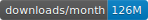

Requests: HTTP for Humans™¶
Release v2.27.1. (Installation)

Requests is an elegant and simple HTTP library for Python, built for human beings.
Behold, the power of Requests:
>>> r = requests.get('https://api.github.com/user', auth=('user', 'pass'))
>>> r.status_code
200
>>> r.headers['content-type']
'application/json; charset=utf8'
>>> r.encoding
'utf-8'
>>> r.text
'{"type":"User"...'
>>> r.json()
{'private_gists': 419, 'total_private_repos': 77, ...}
See similar code, sans Requests.
Requests allows you to send HTTP/1.1 requests extremely easily. There’s no need to manually add query strings to your URLs, or to form-encode your POST data. Keep-alive and HTTP connection pooling are 100% automatic, thanks to urllib3.
Beloved Features¶
Requests is ready for today’s web.
-
Keep-Alive & Connection Pooling
-
International Domains and URLs
-
Sessions with Cookie Persistence
-
Browser-style SSL Verification
-
Automatic Content Decoding
-
Basic/Digest Authentication
-
Elegant Key/Value Cookies
-
Automatic Decompression
-
Unicode Response Bodies
-
HTTP(S) Proxy Support
-
Multipart File Uploads
-
Streaming Downloads
-
Connection Timeouts
-
Chunked Requests
-
.netrcSupport
Requests officially supports Python 2.7 & 3.6+, and runs great on PyPy.
The User Guide¶
This part of the documentation, which is mostly prose, begins with some background information about Requests, then focuses on step-by-step instructions for getting the most out of Requests.
- Installation of Requests
- Quickstart
- Make a Request
- Passing Parameters In URLs
- Response Content
- Binary Response Content
- JSON Response Content
- Raw Response Content
- Custom Headers
- More complicated POST requests
- POST a Multipart-Encoded File
- Response Status Codes
- Response Headers
- Cookies
- Redirection and History
- Timeouts
- Errors and Exceptions
- Advanced Usage
- Session Objects
- Request and Response Objects
- Prepared Requests
- SSL Cert Verification
- Client Side Certificates
- CA Certificates
- Body Content Workflow
- Keep-Alive
- Streaming Uploads
- Chunk-Encoded Requests
- POST Multiple Multipart-Encoded Files
- Event Hooks
- Custom Authentication
- Streaming Requests
- Proxies
- Compliance
- HTTP Verbs
- Custom Verbs
- Link Headers
- Transport Adapters
- Blocking Or Non-Blocking?
- Header Ordering
- Timeouts
- Authentication
The Community Guide¶
This part of the documentation, which is mostly prose, details the Requests ecosystem and community.
The API Documentation / Guide¶
If you are looking for information on a specific function, class, or method, this part of the documentation is for you.
The Contributor Guide¶
If you want to contribute to the project, this part of the documentation is for you.
There are no more guides. You are now guideless. Good luck.